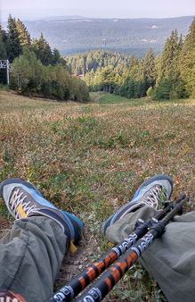

Hiking is one of the most beneficial and healthy hobbies anyone could choose to adopt. The fresh air and sun and up-close exposure to natural features such as streams, forests and mountainsides help to compensate for many of the physical and mental stresses or the work week. I like to go for walks in the mountains or in the woods when I can. This relieves me of stress and tension and charges me with energy. The walks I do are amateur, but I like them. Before the pandemic, my goal was to climb most of the peaks in Bulgaria. Unfortunately, the plans have changed. I like to combine drone flying with mountain walks. I try to ignite my family on such walks. I manage for now as long as the paths are not very long and steep. I have a basic level of equipment for such walks. In the future, if I deepen my hobby, I will invest more in equipment.


-2.jpg)